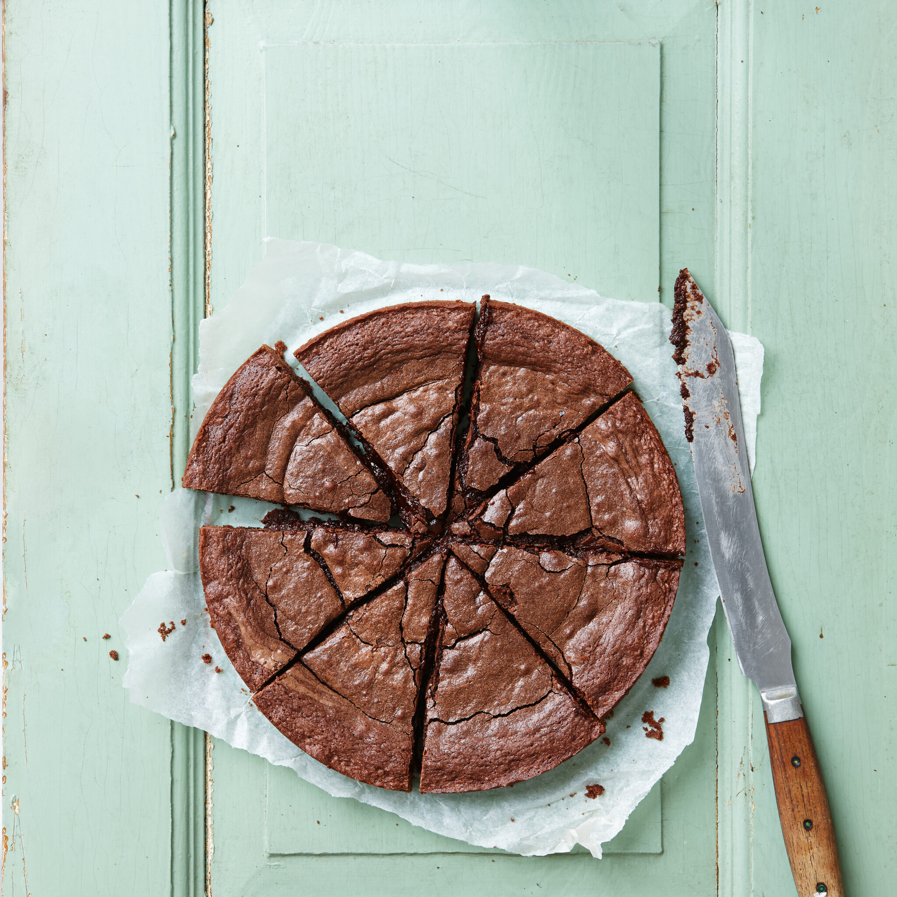

Swedish Sticky Chocolate Cake

Melt in the mouth chocolate cake... the Swedish way (Kladdkaka).
Ingredients
- ½ cup all-purpose flour
- ¼ cup unsweetened cocoa powder
- 1 pinch salt
- 1 ⅓ cups white sugar
- 2 eggs
- ½ cup butter, melted
- 1 tablespoon vanilla extract
Directions
- Preheat oven to 300 degrees F (150 degrees C). Lightly grease an 8-inch pie plate.
- Sift together flour, cocoa powder, and salt in a medium bowl; set aside.
- Stir together sugar and eggs in a large bowl until smooth. Add flour mixture; stir just until combined. Pour in melted butter and vanilla; stir until well combined. Pour into the prepared pie plate.
- Bake on the lower rack of the preheated oven until the center has slightly set, about 35 minutes. Allow cake to cool for 1 hour in the pie plate. Serve warm or refrigerate overnight and serve cold.